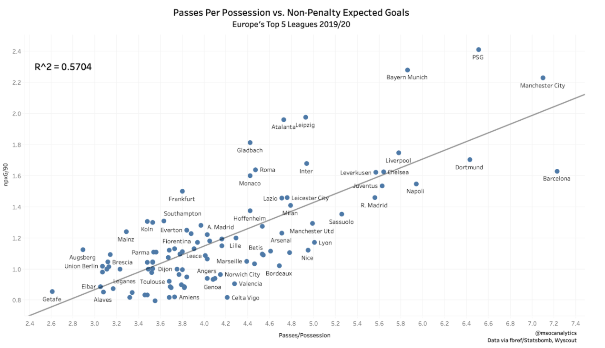
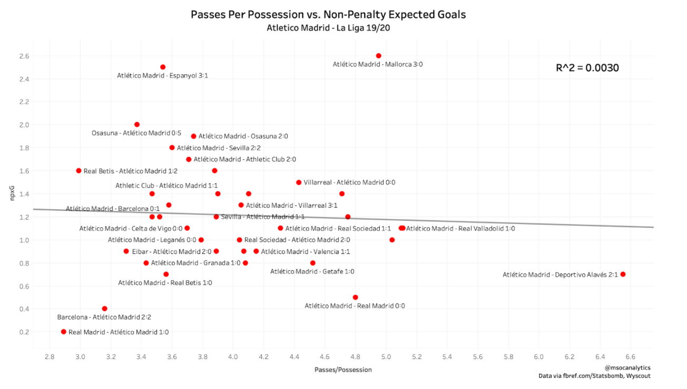
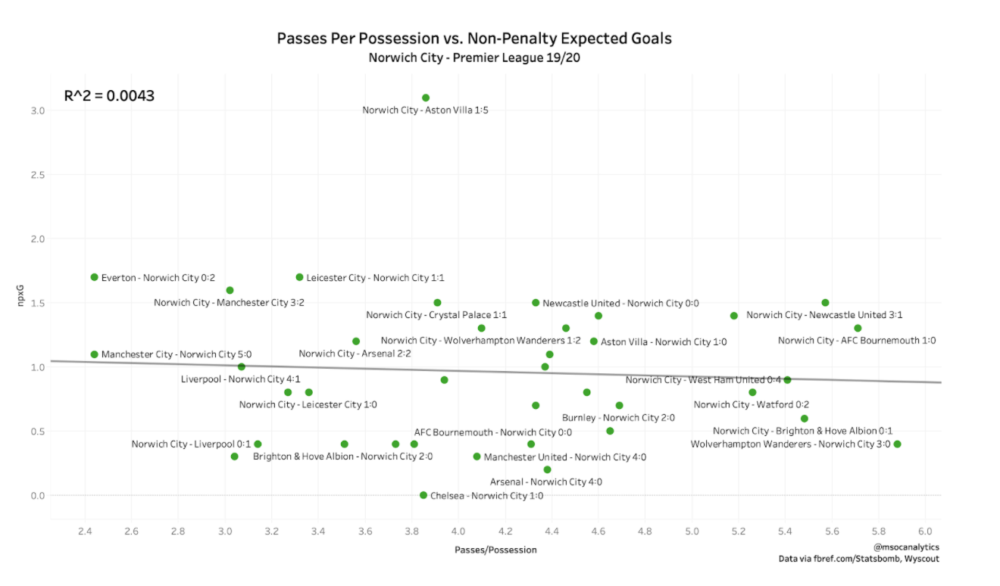

Tiki-Taka vs. Route One. It’s the debate that was perhaps best encapsulated in the El Clasico rivalry between Pep Guardiola’s Barcelona and Jose Mourinho’s Real Madrid from 2010-2012. The two best teams in the world went head to head for the Spanish and European crowns but took two different approaches in their attacking play. Barcelona took a slower, more patient, possession-based approach. Real Madrid took a quicker, more dynamic, direct approach. Despite the differences, each team put up gaudy attacking numbers - each team easily clearing 100 goals in most seasons - and you could easily make the argument that either approach was better than the other.
Defining Direct vs. Possession
Defining what teams are primarily direct attacking teams vs. possession attacking teams is difficult, especially when I don’t have all of the data I would like to have for my research. I’ll get into the details of some of the problems later, but the main issue is that there are teams that attack very directly that have a high amount of possession play because they are some of the top teams in their league and the opposition will typically sit deep and let them play with the ball. We’ll get into possible solutions for this problem later as well, but right now let’s set up what I’m defining as direct and possession soccer.
The main metric I’ve looked at here is passes per possession. The teams that rank highest in this metric are ones like Manchester City, Barcelona, and PSG - all teams known for their possession-based styles. The teams lowest in this metric are ones like Getafe, Burnley, and Augsburg - all teams associated with a deep-block direct approach. In the middle, it gets a bit more muddled because you have some teams that rank on the higher side of this metric that are usually associated with a more direct approach - Jose Mourinho’s Tottenham being the best example - but on the whole, I think passes per possession does a good job of separating the teams that play each style.
For the purposes of this exercise, we’ll take the mean passes per possession value of 4.16 and use that to categorize the teams. Teams below that threshold will be categorized as direct and teams above that threshold will be categorized as possession. This puts teams like Atletico Madrid, Wolfsburg, and Wolves on the direct side, while teams like Brighton, Villareal, and Hoffenheim find themselves on the possession side - all of whom fit their respective categories. Where the definition starts to break down a bit is when teams like Inter Milan and Tottenham - who many would consider more direct given their managers - find themselves in the possession category. Again, we’ll deal with teams like that later, but overall the threshold does a good job of placing teams in the correct camp.
Analysis Of Top Five Leagues
The first thing we’re going to look at - and the reason I wanted to take a look at this debate in the first place - is the relationship between possession-based approaches and non-penalty expected goals. I decided to look at expected goals instead of something tangible like actual goals because I really want to see if possession is a better approach for chance creation. Actual goals depend on so many things, like the finishing ability of the shot-taker or the quality of the opponent’s goalkeeper, that I think it would be more valuable to look at a metric showing the quality of the chances created rather than the end result.
Below you will see a scatterplot examining the relationship between these two variables. The plot shows a moderately strong correlation between passes per possession and non-penalty expected goals. Passes per possession explain a fair 57% of the variation in non-penalty expected goals. It’s not an unbelievably strong relationship between possession and expected goals, but there is one nonetheless.

However, as we know correlation does not mean causation and it’s good to try and explain why there is a relationship if you can. In this case, I’m not entirely convinced that the teams higher in non-penalty expected goals are that way because they take a possession-based approach. Yes, these teams do often take a possession-based approach, but just looking at the names - like Manchester City, Barcelona, PSG - their propensity to play possession soccer may simply be because they are the best teams in Europe rather than because it gives them an advantage in chance creation. And because they are the best teams in Europe, they are typically going to create the most and the best chances of anyone.
To answer our question, I think it might be better to look at teams toward the line between direct and possession. These teams, though they may have a preferred way to play, often switch between a direct and a possession style depending on the game. I am going to look at the full seasons of two teams - Atletico Madrid and Norwich City - and to try and see if they create better chances taking a direct or possession-based approach. Why these two teams? I’m looking at Atletico Madrid because they are a team with equivalent talent to a lot of the teams higher on the possession scale, but they prefer to play a more direct game. Likewise, I’m looking at Norwich City because they are a team on the lower end of the talent spectrum in the top five leagues, but they do try and play possession soccer.
Analysis of Atletico Madrid
Under Diego Simeone, Atletico Madrid have gone from plucky underdogs taking down the big boys by playing direct, counter attacking soccer to one of the big boys still playing the same direct, counter attacking soccer. If you watch the Spanish club now, not a ton has changed in their general style, but they do have a larger amount of talent that could all do well playing a possession game. The likes of Joao Felix and Thomas Partey could easily slot into a team playing possession soccer and perform just as well, if not better. The plus side to having players like this is Simeone can change up the approach if needed, depending on the opponent and/or situation. This season, he’s done that plenty, at least enough for us to compare how Atletico perform on offense using each approach. Looking at the scatterplot below, there is next to no correlation between passes per possession and non-penalty expected goals in Atletico Madrid’s 38 La Liga games this season. This may be due to personnel on the field during some of these games or something the opposition is doing, but overall there doesn’t seem to be much difference in Atletico’s attacking output when they go direct vs. when they go possession.

Analysis of Norwich City
Norwich City was the most hyped promoted team coming into the Premier League this past season by a long way. People were excited to see their young, budding talents play a very open, possession-based game and a lot of people predicted them to stay up because of their approach. Things did not go quite as planned. Norwich were relegated after finishing dead last and numerous times this season the Canaries were forced to go away from their favored approach, be it because of injury or the strength of the opposition. However, like Atletico Madrid, there was almost no correlation at all between their approach and their attacking output. They weren’t a particularly strong team, so their xG was not anticipated to be high against teams like Manchester City when they were much more likely to play direct, but even when they were super possession focused against teams like Brighton and Newcastle, their expected goals were not much different than against the top sides.

Problems Faced
Before I get into my conclusion, I want to talk about some of the issues I faced when doing this analysis. Most of the problems I had were a lack of available data and how that influenced the definition of direct vs. possession approaches. I mentioned earlier teams like Inter Milan and Tottenham that have managers most people would say take a direct approach, yet they fall in the possession category because they end up playing with a lot of possession due to being some of the top teams in their league. I think a way this could have been improved upon would be looking specifically possessions that end in shots and using the number of passes per those possessions to define direct vs. possession. I could’ve also used something like percentage of shots from moves of less than five passes or more than 8-10 passes to determine which category a team fell into. Unfortunately, I did not have access to this kind of data, so I was forced to use what I could find for free. Although I think I did gain some insight from what I had, I have no doubt that more data would have improved my research.
Conclusion
So where does all of this leave us? Are the Cruyffians right in their stance that a possession-based game is the only correct way to play? Or was the pragmatist cult of Mourinho right all along? Well… it’s inconclusive. If we’re to go by my findings, it seems that there actually is no right way to play, that it doesn’t matter whether you attack in a direct or possession-based manner. There is a moderately strong relationship between a possession-based approach and expected goals across all teams in the top five leagues, but this could be attributed to the stronger teams typically playing with a lot of possession and creating a lot of chances simply because they are the best. And if we look at the results of singular teams that switch between each approach, there doesn’t seem to be any relationship at all between approach and expected goals. But, as I mentioned, I didn’t quite have all the data available to me that I wanted in order to nail down my definition of each approach. Had I been able to use that data, I may have been able to reach a conclusion on the matter. Perhaps that data will become available to me at some point and I’ll be able to return to this debate. Until then, teams might just want to use what best suits their players.